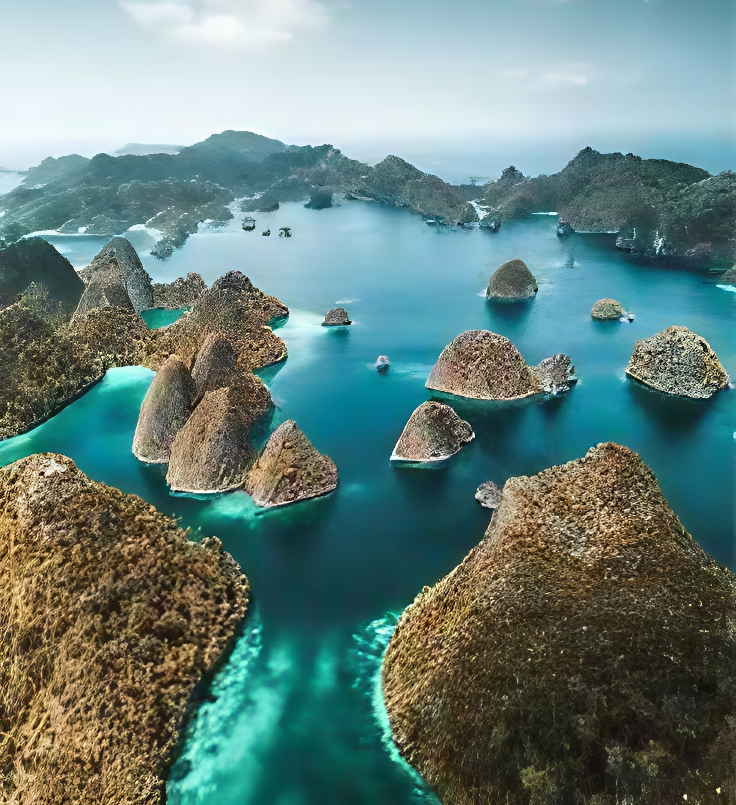

Riau Islands: A Maritime Archipelago of History, Culture, and Trade
The Riau Islands province, located strategically in the heart of Southeast Asia, is an archipelago rich in maritime history, diverse cultures, and thriving trade. From the bustling free trade zone of Batam to the historic city of Tanjung Pinang and the pristine beaches of Bintan, the Riau Islands offer a unique blend of experiences.
A Crossroads of Maritime History:
The Riau Islands have a long and storied past as a vital trading hub and a meeting point for various cultures. Its history is intertwined with:
A Melting Pot of Cultures:
The Riau Islands are home to a diverse population with various ethnic backgrounds, creating a rich cultural tapestry:
Natural Beauty and Tourism:
The Riau Islands offer beautiful natural attractions:
Economic Significance:
The Riau Islands play a crucial role in Indonesia's economy, particularly through:
The Riau Islands' strategic location and rich history have shaped its unique identity. Here's a closer examination:
Johor-Riau Sultanate: This powerful Malay sultanate played a dominant role in the region for centuries, controlling trade and influencing regional politics.
Colonial Era: The Dutch and British colonial powers vied for control of the region due to its strategic importance.
Malay Heritage: The Malay language, customs, and traditions are deeply ingrained in the Riau Islands' culture.
Chinese and Other Influences: The presence of Chinese and other ethnic communities has enriched the cultural landscape of the islands.
Strategic Location: The Riau Islands' proximity to Singapore and other major trading hubs makes it a key player in international trade.
Economic Activities: Free trade, tourism, and maritime industries are the main economic drivers of the region.
The Riau Islands continue to be a dynamic and strategically important region in Southeast Asia, balancing economic growth with cultural preservation and sustainable development.
